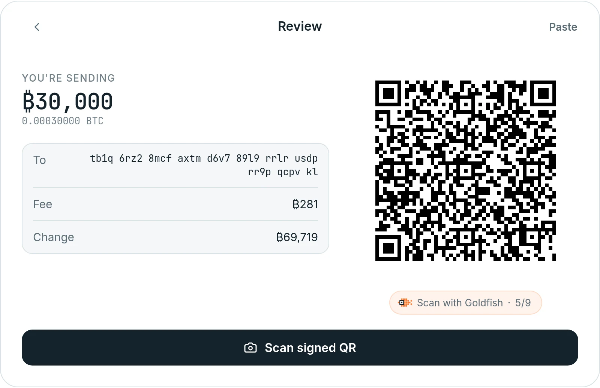
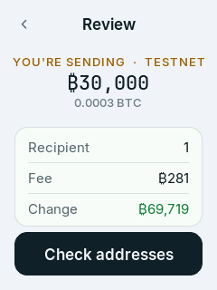
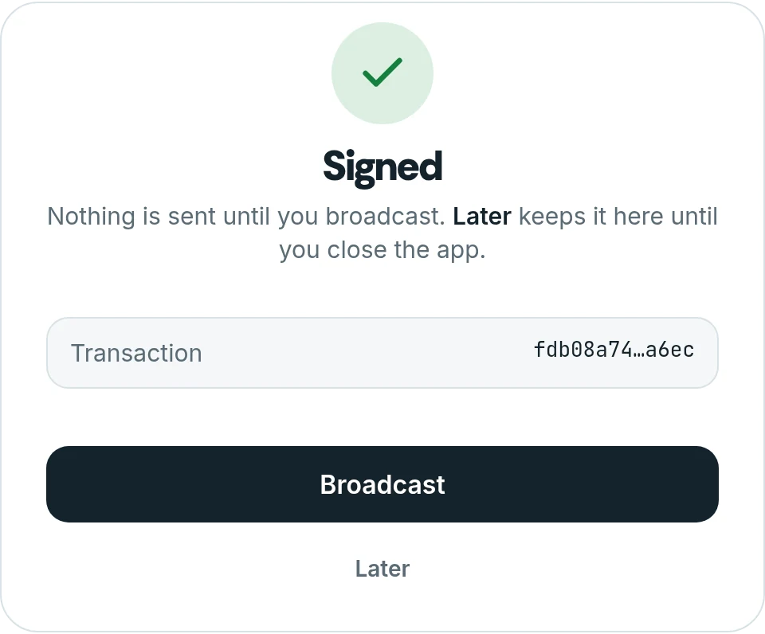
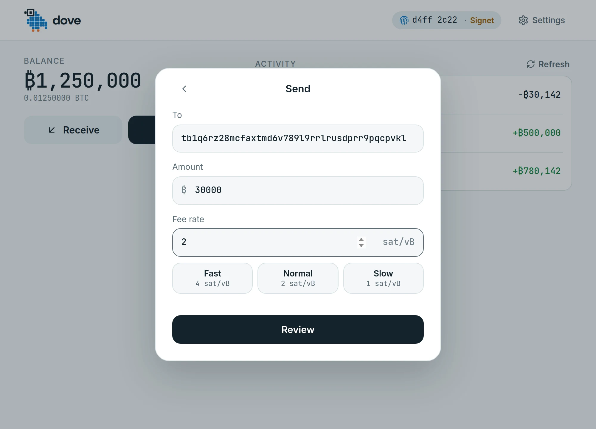
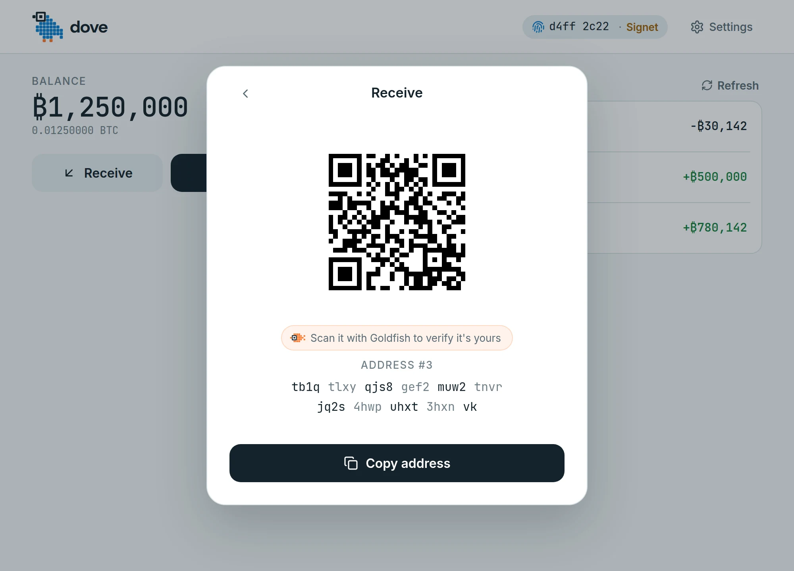

doveby goldfish
doveby goldfishGoldfish signs.
Dove does the rest.
The wallet app for your Goldfish. Dove watches your addresses, builds the transaction and carries the signed one to the network. It never sees your seed.
Build it from source
One round trip, all by QR
Goldfish stays offline. Dove does everything that needs the internet.
doveBuilds the transaction
Pick the amount and the address. Dove shows the unsigned transaction as a moving QR code.

 goldfish
goldfishYou check it and sign
Goldfish scans it, shows where the money goes, and signs when you swipe.

goldfishShows it back
The signed transaction comes back as a moving QR code. Then Goldfish forgets it.
doveScans it and sends it
Hold Goldfish's screen up to the webcam. Dove reads the signed transaction and broadcasts it.

A look inside


Watch-only, on purpose
Dove does
- Hold your wallet: addresses, balance, history
- Build transactions, pick the fee, speed up a stuck one
- Broadcast what Goldfish signed
- Multisig: keep the descriptor, help you back it up, gather the signatures
- Update Goldfish's firmware, checked against the release's checksums
- Talk to your own Electrum or Esplora server, through Tor if you like, or a public one
- Lock what it saves with a password, if you want one
Dove never
- Sees your seed, passphrase or a private key
- Signs anything
- Asks Goldfish to save anything
Dove is optional. Goldfish works with Sparrow too, and that's what the guides use for now.
Try it
There's no package yet. On Linux, with Rust, the Tauri libraries (libwebkit2gtk-4.1-dev and friends) and libclang:
git clone https://github.com/reneaaron/goldfish
cd goldfish/companion/src-tauri
cargo run # GOLDFISH_CAMERA=/dev/video2 for another cameraStart on signet. More in the companion README.